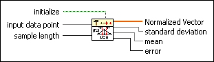

Normalize Vector PtByPt VI
Owning Palette: Probability & Statistics PtByPt VIs
Requires: Full Development System
Normalizes input data point using the statistical profile (mean,standard deviation) to obtain a Normalized Vector whose statistical profile is (0,1).
This VI is similar to the Normalize VI.
 | Note By default, reentrant execution is enabled in all Point By Point VIs. |

 Add to the block diagram Add to the block diagram |
 Find on the palette Find on the palette |